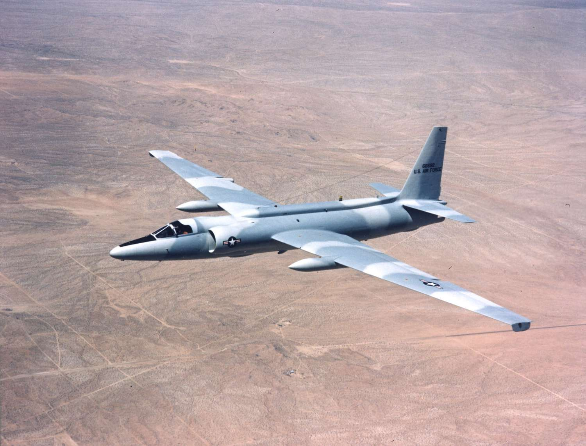

_(41455530471).jpg)
|
The Hurricane was a British single-seat fighter aircraft manufactured by Hawker Aircraft, Ltd.,
in the 1930s and ’40s. The Hurricane was numerically the most important British fighter during
the critical early stages of World War II, sharing victory laurels with the Supermarine Spitfire
in the Battle of Britain (1940–41) and the defense of Malta (1941–42). Hurricanes served in all
theaters of war where British forces were engaged.
The Hurricane emerged from efforts by Sydney Camm, Hawker’s chief designer, to develop a
high-performance monoplane fighter and from a March 1935 Air Ministry requirement calling for an
unprecedented heavy armament of eight wing-mounted 0.303-inch (7.7-mm) machine guns. Designed
around a 1,200-horsepower, 12-cylinder in-line Rolls-Royce engine soon to be dubbed the Merlin,
the Hurricane was an evolutionary development of earlier Camm designs, notably the Fury biplane
fighter. A low-wing monoplane with retractable landing gear, the Hurricane, aside from its clean
lines and heavy armament, was a conventional design. Its wings, rear fuselage, and tail surfaces
were covered by fabric, though the fabric wing covering soon gave way to aluminum.
|
|
The U-2 is a single-seat high-altitude jet aircraft flown by the United States for intelligence
gathering, surveillance, and reconnaissance. Perhaps the most famous spy plane ever built, the
U-2, also known as the Dragon Lady, has been in service since 1956. A prototype flew in 1955,
and the last plane in the series was built in 1989.
On May 1, 1960, a U-2 was shot down over the Soviet Union, precipitating the U-2 Affair, and in
1962, during the Cuban missile crisis, a U-2 took photographs that confirmed the presence of
Soviet nuclear-armed missiles in Cuba. Strategic intelligence-gathering missions have continued,
but the U-2 also has been used for battlefield reconnaissance and surveillance in numerous
conflicts and tension spots where the United States has been engaged since the Vietnam War in
the 1960s.
Although many of its functions were adopted by high-altitude long-endurance unmanned aerial
vehicles, several U-2s are still in service. Since the 1980s the National Aeronautics and Space
Administration (NASA) has operated modified U-2s, designated ER-2 (for “Earth resources”), for
the collection of data on the atmosphere, Earth, and celestial phenomena.
|

|
 1.webp)
|
The F-16, also called Fighting Falcon, is a single-seat single-engine jet fighter built by the
General Dynamics Corporation (now part of the Lockheed Martin Corporation) for the United States
and more than a dozen other countries. The F-16 originated in an order placed in 1972 for a
lightweight cost-effective air-to-air fighter; current models are also all-weather capable, and
it is effective for ground attack as well. The U.S. Air Force took first delivery in 1978.
The F-16 is 49 feet (15 meters) long and has a wingspan of 31 feet (9.45 meters). It is powered
by a single Pratt & Whitney or General Electric turbofan engine, which, with afterburning, can
generate 23,000 to 29,000 pounds (102 to 130 kilonewtons) of thrust, accelerating the aircraft
to more than twice the speed of sound. Weaponry includes an 0.8-inch (20-millimeter) rotary
cannon as well as attachments under the wings and fuselage for a wide variety of bombs and
missiles. With a typical combat load, the F-16 weighs approximately 23,000 pounds (10,000 kg).
It has been sold to U.S. allies in the Middle East, where it proved very effective in air-to-air
combat and ground attack in the Israeli-Syrian conflict of 1982 and in the Persian Gulf War of
1990–91. In terms of international sales, the F-16 is the fighter in greatest demand, and it is
currently in the air forces of more than 20 countries
|
|
The Russian aerospace design bureau’s MiG-21, a lightweight single-engine interceptor capable of
flying at twice the speed of sound, was introduced in 1955. The basic version, which entered
service in 1958, was a simple low-cost day fighter that was highly maneuverable, easy to
maintain, and able to operate from unimproved airfields. The design bureau produced more than
9,000 MiG-21s in as many as 32 versions for the air forces of the Soviet Union and more than 40
other countries and licensed a version for production in China. It became the principal
high-altitude interceptor used by North Vietnam, and improved versions formed the backbone of
Arab air forces through the 1970s.
|
.jpg)
|
.webp)
|
The B-52, also called Stratofortress, is a U.S. long-range heavy bomber designed by the Boeing
Company in 1948, first flown in 1952, and first delivered for military service in 1955. Though
originally intended to be an atomic-bomb carrier capable of reaching the Soviet Union, it has
proved adaptable to a number of missions, and some B-52s are expected to remain in service well
into the 21st century. The B-52 has a wingspan of 185 feet (56 meters) and a length of 160 feet
10.9 inches (49 meters). It is powered by eight jet engines mounted under the wings in four twin
pods. The plane’s maximum speed at 55,000 feet (17,000 meters) is Mach 0.9 (595 miles per hour,
or 960 km/hr); at only a few hundred feet above the ground, it can fly at Mach 0.5 (375 miles
per hour, or 600 km/hr). It originally carried a crew of six, its sole defensive armament being
a remotely controlled gun turret in the tail. In 1991 the gun was eliminated and the crew
reduced to five.
The huge airframe of the B-52 earned it the nickname “Big Ugly Fat Fellow” (BUFF), but it also
allowed the plane to be retrofitted with highly sophisticated navigational, weapons-control, and
electronic countermeasures systems. More than 70 B-52s remain in service in the United States
Air Force.
|